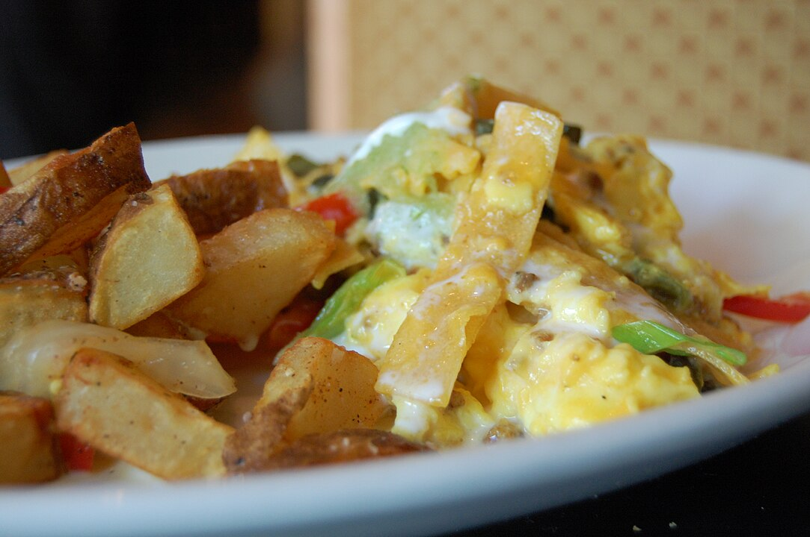

Migas Recipe

By stu_spivack
- migas, CC BY-SA 2.0, Link
Description:
Corn chips, cheese, and eggs make for a delicious breakfast, accompanied by papas (potatoes). This working class
breakfast starts with heating old tortilla chips (or old tortillas) with oil in a skillet. Beat three or four
eggs and add a little water that will
soak through everything. Some pico de gallo or diced onions, tomatoes, and peppers will add flavor and nutrients
to the dish. Place grated cheese on the heated
chips, as well as the vegetables, and then pour the beaten egg mixture on top. Cook on medium and turn over
occasionally until the eggs are thoroughly scrambled and cooked to your taste.
Ingredients
- Tortilla Chips (~15)
- Neutral Oil (1 tbsp)
- Eggs (3-4)
- Pico de Gallo (alternatively, next three vegetables)
- Tomato, diced
- Onion, diced
- Jalapeño Pepper, diced
- Cheese, grated
Steps
- Add oil to warm skillet.
- Add tortilla chips, crushing them. Cook for several minutes.
- Beat eggs in a bowl, and add 1/4 to 1/2 cup of water. Set aside.
- Spread pico de gallo or diced vegetables around the cooked tortilla chips.
- Spread grated cheese around the cooked tortilla chips. Wait a minute or two for the cheese to warm.
- Pour egg mixture over the tortilla chips. Allow to cook on medium for several minutes.
- Turn cooked eggs over and raise heat to fully scramble them according to taste.
- Serve with salsa, home fried potatoes, and/or warm fresh tortillas.